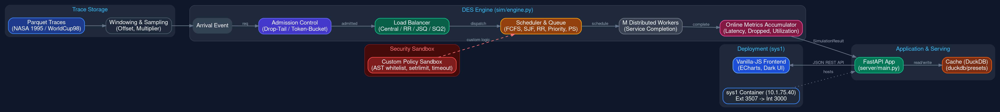
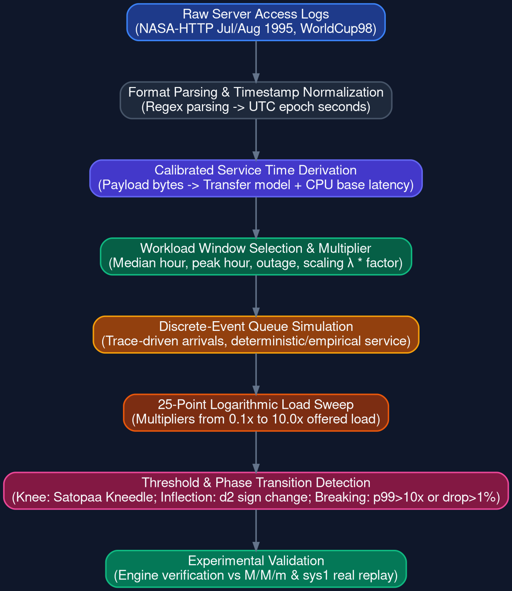

Precomputed Demonstration Presets
Instantaneous evaluation of real-world scenarios loaded from disk in <1 second.
Interactive Discrete-Event Simulator
Replay real production traces through multi-server queues with scheduling and admission policies.
Simulation Parameters
Performance Metrics
Queue Depth & Server Activity Timeline
Phase Transition Analysis: Knee, Inflection & Breaking Points
Logarithmic load sweep (λ × 0.1x to 400x) identifying system stability boundaries.
p99 Latency vs Offered Load Curve
Goodput & Throughput vs Offered Load (Saturation Curve)
Policy Shootout (Head-to-Head Comparison)
Run all 7 scheduling policies side-by-side against identical arrival sequence and compare tail latency, starvation, and fairness.
Comparative Performance Rankings
Detailed Metrics Table
Custom Policy Sandbox
Write custom scheduling logic in Python. Executed inside a POSIX sandboxed subprocess with AST allowlist & setrlimit.
Sandbox Execution Results
Comparison with Baseline FCFS
Real Production Traces Ingestion Explorer
Empirical traffic traces replayed by NetSim-RT. Zero synthetic data in benchmarks.
Request Arrival Rate Timeline
Service Time / Size Distribution
System Architecture & Experimental Methodology
End-to-end discrete-event queueing simulation pipeline and empirical trace-driven methodology.
System Architecture
Design
Simulation Methodology
Pipeline
System Validation: Discrete-Event Simulation vs. Real Running System
Empirical verification comparing NetSim-RT predictions against a live multi-process server executing CPU-bound workloads under replayed NASA-Jul95 trace traffic on sys1.
Engine Verification (Unit Tests)
Closed-form M/M/1 and M/M/c queueing theoretic checks pass (14/14 unit tests green, verifying Little's Law, Erlang-C delay formulas, and AST sandbox isolation).
Note: These engine verification unit tests are synthetic by design to rigorously establish mathematical ground truth against theoretical queueing bounds before real-trace validation.